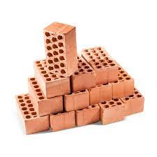
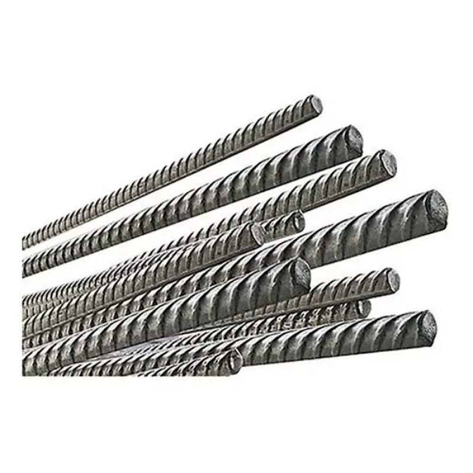
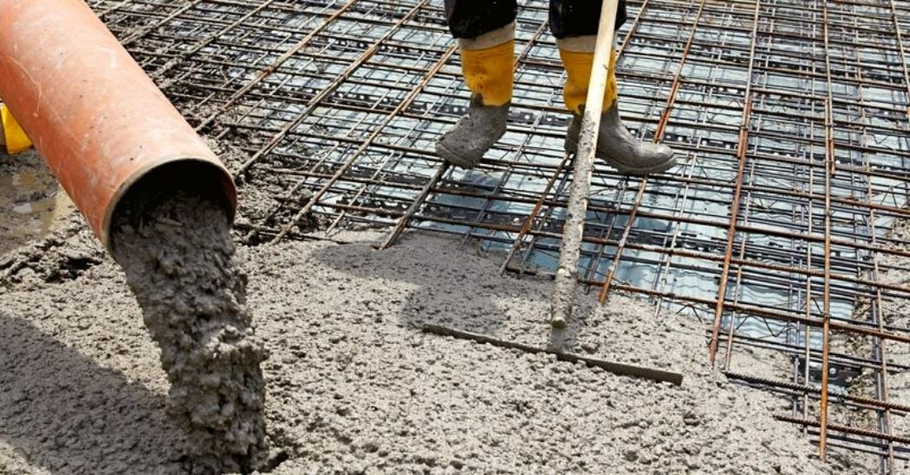
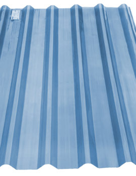
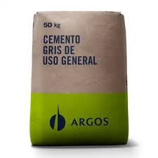
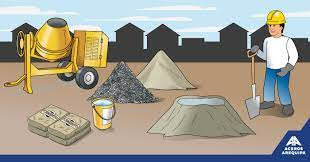
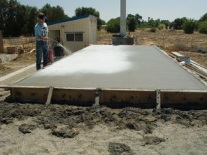
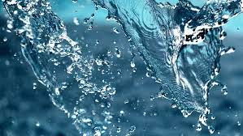
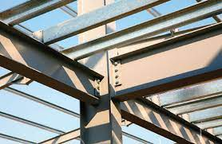

Este material está compuesto, en esencia, de sílice, alúmina, agua y cantidades variables de óxidos de hierro y otros materiales alcalinos, como los óxidos de calcio y los óxidos de magnesio. Las partículas de materiales son capaces de absorber higroscópicamente hasta el 70% en peso, de agua.

Es una aleación de acero con 0.22% de carbono, 0.05% de fósforo, 0.05% de azufre y 0.012% de nitrógeno. Se trata de barras de acero que presentan resaltos o corrugas que mejoran la adherencia con el hormigón, y poseen una gran ductilidad, la cual permite que las barras se ormigónpuedan cortar y doblar con mayor facilidad

La composición básica del concreto es cemento, agua y agregados. El cemento y los agregados representan un 25% y 65% del concreto formado respectivamente, aunque esto puede variar según el uso y destino del concreto.

Está compuesta por agua, cargas, pigmentos, resina y aditivos.
Al agua se le mezclan el resto de materias que conforman la pintura y una vez aplicada, este agua se evapora en el proceso de secado.
Las cargas más habituales son el carbonato de calcio y magnesio, sílice, silicato de magnesio, aluminio, potasio y sulfatos de bario. Tienen muchas funciones tales como poder de cubrición, resistencia a microorganismos, porosidad, blancura, nitidez del color de los pigmentos, permeabilidad al vapor de agua, etc..
Los pigmentos definen el tono del color del producto acabado. Hay dos tipos, los minerales como el bióxido de titanio, óxidos de hierro y cromo y los pigmentos orgánicos que completan la gama de colores pero se ha de comprobar su estabilidad al exterior.
La resina se trata de polímeros sintéticos dispersos en gotas microscópicas y estabilizadas, son las responsables del contenido en sólidos de la pintura, la medida de su partícula influye en el poder ligante de la dispersión y la filmificación en el secado de la pintura además de la resistencia a la saponificación.
Los aditivos son el último componente y se trata de humectantes, dispersantes, espesantes, disolventes, antiespumantes, agentes neutralizantes, biocidas, etc..
Según la composición química podemos concretar que el impacto en el precio de la pintura depende principalmente del pigmento bióxido de titanio (blanco) y del ligante (resina), también alguno aditivos son muy caros pero su presencia en la fórmula es de bajas dosis.
La teja es una pieza elaborada con barro cocido, de forma curvada, que se coloca en la parte exterior de la cubierta, conformado el tejado, para recibir y canalizar el agua de lluvia, la nieve, o el granizo.El empleo de tejas para cubiertas está atribuido a los griegos, quienes utilizaban placas de cerámica delgadas y ligeramente curvadas

Composición química: CaO, SiO2, Al2O3, Fe2O3 y otros compuestos. Especificaciones: (CaO)/(SiO2) ≥ 2,0. MgO ≤5,0%
El cemento es un conglomerante hidráulico, es decir, un material inorgánico finamente molido que amasado con agua, forma una pasta que fragua y endurece por medio de reacciones y procesos de hidratación y que, una vez endurecido conserva su resistencia y estabilidad incluso bajo el agua.

Dosificado y mezclado apropiadamente con agua y áridos debe producir un hormigón o mortero que conserve su trabajabilidad y capacidad de darle forma durante un tiempo suficiente, alcanzar unos niveles de resistencias preestablecido y presentar una estabilidad de volumen a largo plazo.

El endurecimiento hidráulico del cemento se debe principalmente a la hidratación de silicatos de calcio, aunque también puede participar en el proceso de endurecimiento otros compuestos químicos, como por ejemplo, los aluminatos.
suma de las proporciones de óxido de calcio reactivo (CaO) y de dióxido de silicio reactivo (SiO2) debe ser al menos del 50% en masa cuando las proporciones se determinan conforme a la Norma Europea EN 196-2.

El agua está formada por dos átomos de hidrógeno (H) y un átomo de oxígeno (O) unidos mediante sendos enlaces covalentes, de manera que la molécula tiene una forma triangular plana. Es decir los átomos de hidrógeno y oxígeno están separados entre sí aproximadamente 0,96 Angstroms (más o menos un nanómetro – una milmillonésima de metro) y el ángulo que forman sus líneas de enlace es de unos 104,45 grados.
Además el agua se comporta como un dipolo, es decir tiene dos regiones con una cierta carga eléctrica. Una de ellas es positiva y la otra negativa.
El hecho de que el agua sea un dipolo se debe a que el hidrógeno y el oxígeno son átomos muy distintos desde el punto de vista de la electronegatividad. Es esta una propiedad atómica que indica la forma en que un átomo atrae hacia si los electrones que comparte con otro en un enlace covalente.

El acero es una aleación de hierro y carbono en un porcentaje de este último elemento variable entre el 0,008% y 2.11% en masa de su composición
